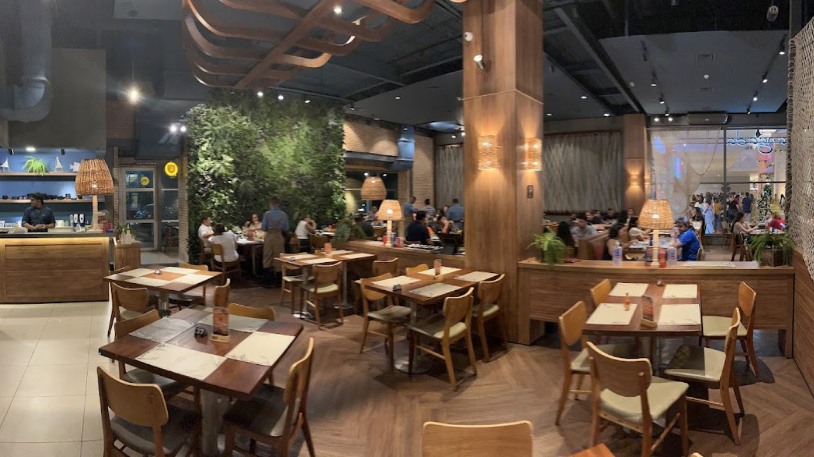
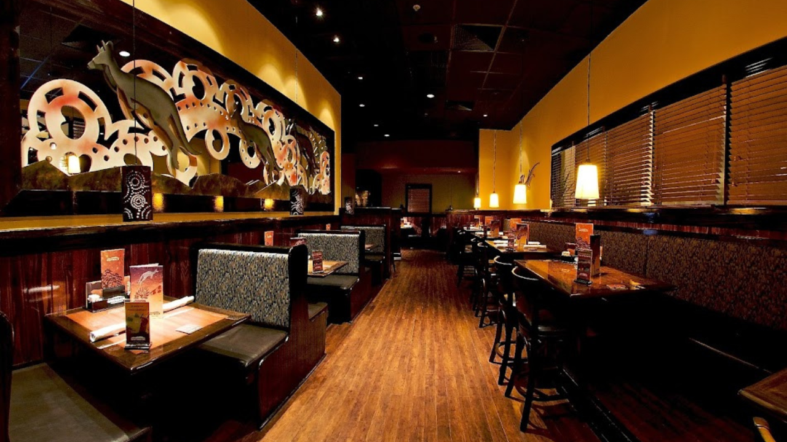
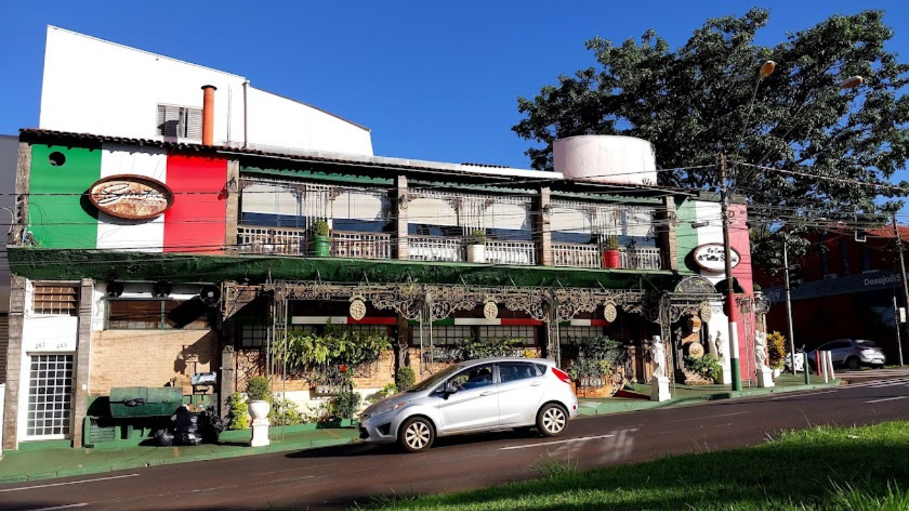
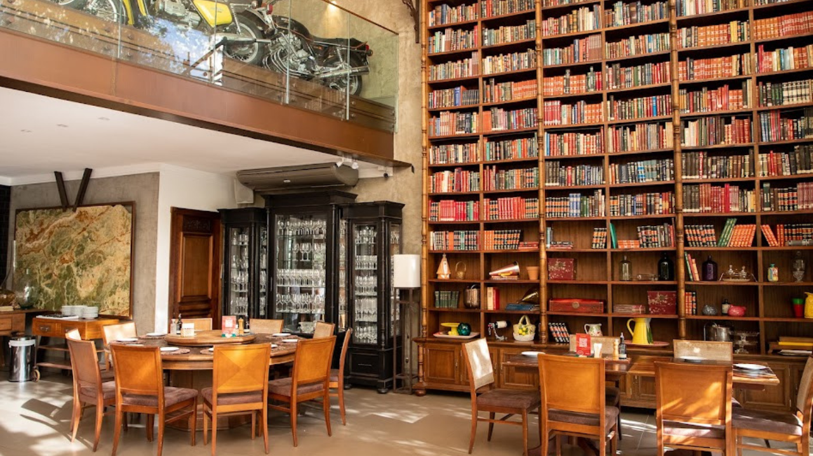

O Restaurante Jangada é uma referência em culinária especializada em peixes e frutos do mar, com tradição desde 1964. A unidade de Ribeirão Preto, localizada no Ribeirão Shopping, oferece um ambiente acolhedor e sofisticado, ideal para apreciar pratos que combinam sabores do mar com toques da culinária oriental e carnes nobres.
📍 Localização: Avenida Coronel Fernando Ferreira Leite, 1540 – Loja 245 – Jardim Califórnia, Ribeirão Preto – SP
O Outback Steakhouse do Ribeirão Shopping é uma das unidades mais populares da rede australiana no Brasil, oferecendo um ambiente descontraído e pratos icônicos como a Bloomin' Onion, Ribs on the Barbie e cortes especiais de carne. É uma ótima opção para almoço, jantar ou happy hour com amigos e família.
📍 Localização: Avenida Coronel Fernando Ferreira Leite, 1540 – Jardim Califórnia, Ribeirão Preto – SP (Sétima Expansão do RibeirãoShopping)
O La Cucina di Tullio Santini é um renomado restaurante italiano em Ribeirão Preto, conhecido por sua culinária toscana autêntica e ambiente sofisticado. Oferece pratos artesanais, como massas frescas, risotos e carnes nobres, além de uma carta de vinhos com mais de 100 rótulos.
📍 Localização: Avenida Antônio Diederichsen, 485 – Jardim São Luiz, Ribeirão Preto – SP
O Amici Ristorante, localizado no Jardim Sumaré em Ribeirão Preto, é um restaurante que combina a sofisticação das culinárias italiana e francesa. Sob o comando do chef Tullio Santini Jr., o Amici oferece pratos autorais em um ambiente elegante e acolhedor, ideal para ocasiões especiais.
📍 Localização: Rua Olavo Bilac, 1280 – Jardim Sumaré, Ribeirão Preto – SP
O Ancho Di Tullio é um restaurante especializado em carnes nobres, localizado no Jardim Canadá, em Ribeirão Preto. Inspirado nas tradicionais parrillas argentinas, oferece cortes premium como bife ancho, chorizo e T-bone, acompanhados por pratos gourmet como arroz de limão, cebola assada e farofa de linguiça com bacon. O ambiente é sofisticado e acolhedor, com grandes janelas de vidro que proporcionam luz natural, ideal para refeições memoráveis.
📍 Localização: Avenida José Adolfo Bianco Molina, 2595 – Jardim Canadá, Ribeirão Preto – SP